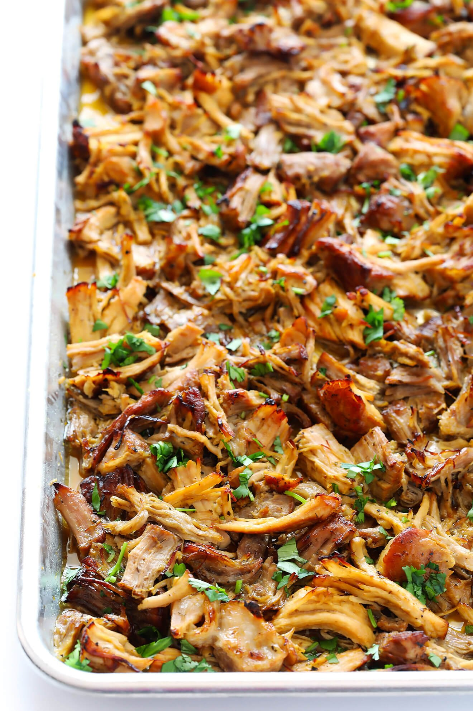

Instant Pot Carnitas

Dish Description:
Instant Pot carnitas are easy to make with pork shoulder, orange juice, and spices.
You just need a little patience for the pressure to release naturally, but you'll be rewarded with fall-apart tender pork.
Perfect for tacos, nachos, burritos, and more!
Prep Time: 15 mins
Cook Time: 1 hr
Additional Time: 15 mins
Total Time: 1 hr 30 mins
Servings: 24
Ingredients:
- 1 (6 pound) pork butt roast
- 1 ½ tablespoons salt
- 1 tablespoon dried oregano
- 2 teaspoons ground cumin
- 1 teaspoon ground black pepper
- ½ teaspoon chile powder
- ½ teaspoon paprika
- 2 tablespoons olive oil, or more to taste
- 1 cup orange juice
- 1 onion, coarsely chopped
- 4 cloves garlic, diced, or more to taste
Directions:
- Step 1
- Trim excess fat from pork butt; cut pork into 2-inch cubes and transfer to a large bowl.

- Step 2
- Combine salt, oregano, cumin, black pepper, chile powder, and paprika in a small bowl.
- Rub pork cubes with spice mixture. Coat seasoned pork cubes lightly in olive oil; transfer to a pressure cooker.
- Cover pork cubes with orange juice, onion, and garlic.
- Step 3
- Cover pork cubes with orange juice, onion, and garlic.
- Step 4
- Place lid on the pressure cooker and lock; bring to full pressure over medium heat until pork is no longer pink in the center, about 60 minutes.
- Let pressure come down naturally, about 15 minutes.
- Step 5
- Remove pork from the pressure cooker and shred meat.